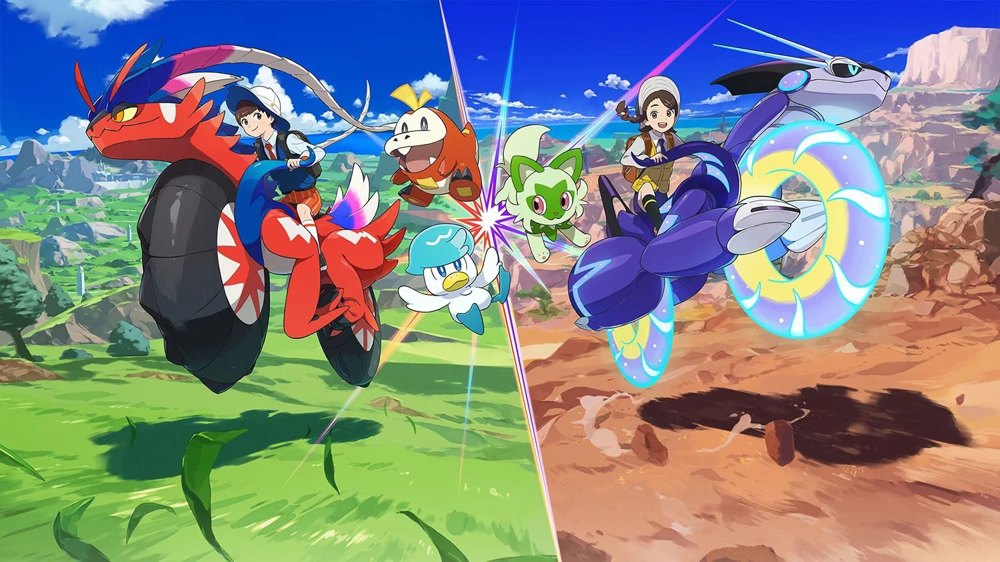

Scarlet & Violet are here! In this guide, you will find some commonly asked questions to get you started and guide you along your journey into the Paldea region!
What is shiny-locked and what isn't?
The term ‘shiny-locked’ refers to the ability of a Pokémon to be shiny or not; some Pokémon, such as those listed below, cannot be shiny even if reset.
Static encounters, such as Gimmighoul, Koraidon, and Miraidon.
The term ‘shiny-locked’ refers to the ability of a Pokémon to be shiny or not; some Pokémon, such as those listed below, cannot be shiny even if reset.
Terastalizing your Pokémon will add the Tera Type of your Pokémon, causing the following:
All moves of this type will receive a 1.5x STAB bonus.
If the move already receives a 1.5x STAB bonus, such as a Fire-type Pokémon Terastilizing as a Fire-type and using a Fire-type move, the bonus becomes 2.0x.
All in-game trades are shiny-locked.
All other typings of the Pokémon are removed, and the Pokémon becomes the specific Tera Type it transforms into.